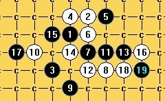

山月}
首页
茗弈阁
#1 山月} 作者：高星 发表时间：2009-6-14 22:54:09
=======上图对应的爱五子棋谱代码如下，以便你拆解：========
h8h7i10g7f7g8g9f10h11j9f9g10e9h9i8d9i11i9k9j12
======================================================@右葬岷谠觞N侔
#2 Re:山月} 作者：越狱行辕 发表时间：2009-6-14 23:02:05
别跟我说楼上你台湾的？
没事用什么繁体
#3 Re:山月} 作者：忧郁的双眼 发表时间：2009-6-14 23:13:52
也许是打台服的WOW
懒得切换
我可以理解
哈哈！！！
#4 Re:山月} 作者：wrwak 发表时间：2009-6-15 8:11:36
也可能是香港公司装的系统是繁体的
#5 Re:山月} 作者：高星 发表时间：2009-6-15 8:14:06
 拜托大家回到主题
拜托大家回到主题
#6 Re:山月} 作者：茗弈小刀 发表时间：2009-6-15 9:48:35
=======上图对应的爱五子棋谱代码如下，以便你拆解：========
h8g7i10h7f7g8g9f10h11j9f9g10e9h9i8d9i11i9k9j12j11
======================================================这个21可以试下。
#7 Re:山月} 作者：高星 发表时间：2009-6-15 10:05:50
=======上图对应的爱五子棋谱代码如下，以便你拆解：========
h8h7i10g7f7g8g9f10h11j9f9g10e9h9i8d9i11i9k9j12j11k11
======================================================这样应该还是杀不掉吧 怎么谱上写的黑必胜啊
#8 Re:山月} 作者：不知 发表时间：2009-6-15 10:21:14
=======上图对应的爱五子棋谱代码如下，以便你拆解：========
h8h7i10g7f7g8g9f10h11j9f9g10e9h9i8d9k9
====================================================== 建议换个17手..
建议换个17手..
［ 茗弈小刀 于 2009-6-15 11:30:12 时花20金币送鲜花一朵］
#9 Re:山月} 作者：茗弈小刀 发表时间：2009-6-15 11:32:04
不知弟弟这个17好！
#10 Re:山月} 作者：聂淼 发表时间：2009-6-15 22:22:04
没找到简单杀
#11 Re:山月} 作者：sonix 发表时间：2009-6-29 10:02:03
 123345.rar
123345.rar［ 茗弈小刀 于 2009-6-29 10:56:38 时奖励此帖[金币加 20 威望加1］
#12 Re:山月} 作者：静待花开 发表时间：2009-6-30 11:44:07
谢谢11楼老师！
#13 Re:山月} 作者：茗弈如梦 发表时间：2009-6-30 18:47:21
 同楼上,谢谢
同楼上,谢谢
#14 Re:山月} 作者：茗弈如梦 发表时间：2009-6-30 18:54:29
随便发张图,songix老师也把它地毯了吧
=======上图对应的爱五子棋谱代码如下，以便你拆解：========
h8h9i6g9f9g8g7f6h5j7f7g6e7h7i8e6d7c7d6f8j8i7k7l8l6m5k6j6k5k4m7n8j5i5i10
======================================================听说这个17较好,好像是真心老师在三手讲过,,17=19,,,也能必胜吗
#15 Re:山月} 作者：一千次回眸 发表时间：2009-6-30 22:25:44
如梦17错了。传不了谱我。麻烦版主加个威望谢谢。［ 茗弈小刀 于 2009-6-30 22:26:55 时奖励此帖[金币加 20 威望加1］
#16 Re:Re:山月} 作者：一千次回眸 发表时间：2009-6-30 22:28:37
山岚之16.rar
送给如梦这个谱。
［ 茗弈小刀 于 2009-7-1 10:47:07 时花20金币送鲜花一朵］
#17 Re:山月} 作者：茗弈如梦 发表时间：2009-7-1 7:35:48
谢谢哦,不过我的16手和你发的16手不一样
#18 Re:Re:山月} 作者：sonix 发表时间：2009-7-1 8:22:54
引用：
原文由 茗弈如梦 发表于 2009-6-30 18:54:29 :
随便发张图,songix老师也把它地毯了吧
=======上图对应的爱五子棋谱代码如下，以便你拆解：========
h8h9i6g9f9g8g7f6h5j7f7g6e7h7i8e6d7c7d6f8j8i7k7l8l6m5k6j6k5k4m7n8j5i5i10
======================================================听说这个17较好,好像是真心老师在三手讲过,,17=19,,,也能必胜吗
冲不冲区别不大，杀的思路差不多
#19 Re:山月} 作者：茗弈如梦 发表时间：2009-7-1 8:47:15
=======上图对应的爱五子棋谱代码如下，以便你拆解：========
h8h9i6g9f9g8g7f6h5j7f7g6e7h7i8e6d6d7
======================================================不冲位置就18子占了,
#20 Re:Re:山月} 作者：sonix 发表时间：2009-7-1 8:51:18

和这个16同型杀了，所以不怕被占冲4点
［ 茗弈如梦 于 2009-7-1 9:02:26 时花20金币送鲜花一朵］
#21 Re:山月} 作者：茗弈如梦 发表时间：2009-7-1 9:00:25
原来你上次发的谱是10手败,上次以为是16手败的谱,所以没看细了
#22 Re:山月} 作者：茗弈如梦 发表时间：2009-7-1 9:02:03
这个点确实是大厅见过他们讲过,杀法就和我发的图一样,,那时候走马观花,也没听他们怎么说,